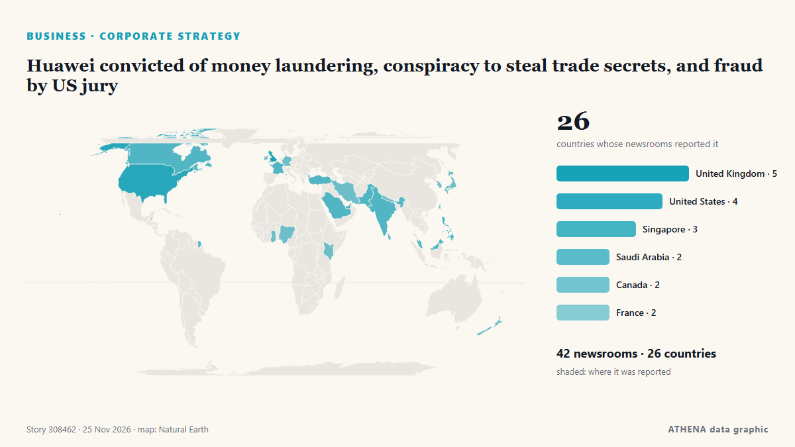

Stratégie d'entreprise
SponsoriséPrésenté par  Cybernetics and Artificial Intelligence Lab Welcome to the Cybernetics and Artificial Intelligence Laboratory, established at the Department of Business Administration of the National and Kapodistrian University of Athens. The lab is headed by Professor Dimitrios Thomakos. The lab aims to do research that can be published in top venues. Our research uses tools and methods of Artificial Intelligence, and lies in the following areas: - Forecasting - Decision making - Cyber security - Finance We are always looking forward to collaborating with exceptional students!
Cybernetics and Artificial Intelligence Lab Welcome to the Cybernetics and Artificial Intelligence Laboratory, established at the Department of Business Administration of the National and Kapodistrian University of Athens. The lab is headed by Professor Dimitrios Thomakos. The lab aims to do research that can be published in top venues. Our research uses tools and methods of Artificial Intelligence, and lies in the following areas: - Forecasting - Decision making - Cyber security - Finance We are always looking forward to collaborating with exceptional students!
| 12 nov. | 0 |
|---|---|
| 13 nov. | 0 |
| 14 nov. | 0 |
| 15 nov. | 0 |
| 16 nov. | 0 |
| 17 nov. | 0 |
| 18 nov. | 0 |
| 19 nov. | 2 |
| 20 nov. | 0 |
| 21 nov. | 4 |
| 22 nov. | 2 |
| 23 nov. | 3 |
| 24 nov. | 8 |
| 25 nov. | 5 |
Les titres sont affichés en anglais, tels que publiés.

Huawei convicted of money laundering, conspiracy to steal trade secrets, and fraud by US jury
A jury found Huawei guilty on 10 out of 12 counts, although it was acquitted of racketeering and conspiracy to obstruct justice. de Tom's Hardware
Danaos marks 20 years on NYSE with Opening Bell ceremony
Danaos Corporation marked the 20th anniversary of its listing on the New York Stock Exchange, with Dr John Coustas ringing the Opening Bell on 20 November. de Container News
FSSAI on pan-India enforcement drive on packaged drinking water, lab test to take 1-2 months: CEO Rajit Punhani
New Delhi: FSSAI CEO Rajit Punhani on Wednesday said the food regulator is collecting samples of packaged drinking water from across the country and lab testing will be complete in around two months. de Deccan Herald
EasyJet profits plunge on £244 million fuel cost hit
The low cost carrier revealed statutory pre-tax profits plunged 96% to £24 million in the year to September 30. de Evening Standard (London)
S-Oil completes W9tr Shaheen petrochemical project
S-Oil marked the completion of its Shaheen petrochemical complex in Ulsan on Wednesday, capping South Korea’s largest-ever petrochemical investment as the refiner moves to expand its chemicals… de Korea Herald
Dangote refinery set to become Africa’s biggest listed company
Far exceeding the size of the next-largest business on the continent. de Moneyweb
ShipVet Appoints New CEO as Founder Steps Back
Marine assurance and vessel vetting company ShipVet has appointed James Stairmand as chief executive officer, effective November 2026, as founder Captain Fintan Cullen moves to a non-executive role… de Maritime Professional
Dell lifts annual forecasts after record quarter on surging AI server demand
For fiscal 2027, Dell now expects revenue of US$202 billion, above its prior target of US$192 billion. de The Business Times
Former Tauranga City Council chief executive Marty Grenfell paid $152,318 in severance after Mount Maunganui landslide review
The landslide at Mount Maunganui killed six; the council ignored successive warnings. de New Zealand Herald
Google will make AI agents use new gateways to reach Gmail and Drive
Google has made its Workspace MCP servers and CLI generally available and says AI agents must use them instead of existing REST APIs from February 1, 2027. de The Next Web
Costa Concordia Captain Released from Prison After Nine Years
Francesco Schettino, the former captain of the Costa Concordia cruise ship that capsized off Italy in 2012, killing 32 people, has been released from prison after more than nine years... de gCaptain
Anne O'Connor to 'vigorously' challenge her 'profoundly flawed' removal as HSE CEO
Ms O'Connor said she is 'deeply surprised and disappointed' by the 'abrupt' manner of the decision. de Irish Examiner
Sayyid Theyazin inaugurates IFC Oman headquarters
MUSCAT: HH Sayyid Theyazin bin Haitham al Said, Deputy Prime Minister for Economic Affairs, opened the headquarters of the International Financial Centre of Oman at Al Mouj Busine... de Oman Observer
Google to shut down Nest app, Google Assistant on smart home devices in 2027
Google is announcing some significant changes to its smart home software. de The Verge
Russia and Iran Exploring Expanded Cooperation in Mining, Industry and Technology
Addis Ababa, November 24, 2026 (FMC) – Russia and Iran are seeking to expand industrial and trade cooperation, with mining emerging as one of the promising areas of partnership alongside… de Fana Broadcasting Corporate
Russia’s Wildberries CEO steps down days after EU sanctions, media report
Nov 21 - Tatyana Kim, the head of Russia's largest online retailer Wildberries, has stepped down, Russian media reported on Saturday, days after the European Union added her to its Russia sanctions… de The Straits Times
Shashi Tharoor tries GTA 6 for the first time, says ‘Grand theft, yeah, but auto?’
Shashi Tharoor admitted that neither the setting nor the characters in GTA 6 appealed to him. de Hindustan Times
Kalshi's 30-year-old founder built $40bn giant; now faces US gambling law battle
Luana Lopes Lara, 30, became the world's youngest self-made female billionaire after co-founding Kalshi with Tarek Mansour in 2021. de Times of India (World)
Turkey freezes assets of 108 people in fund scandal: report
Prosecutors investigating Turkey's investment fund crisis have frozen the assets of 108 people who each earned over $2 million in profits through trading. de The New Arab